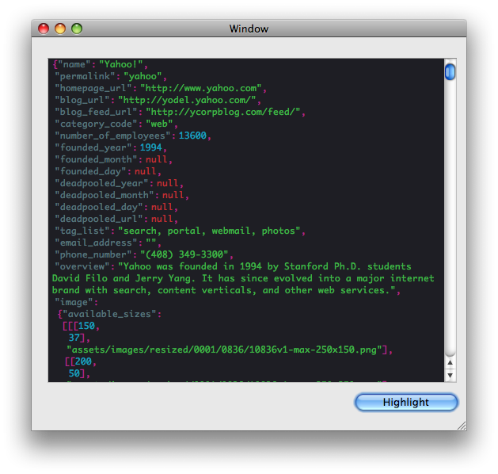

OkudaKit
What is it?
An open source (BSD-license) Mac OS X Framework written by Todd Ditchendorf for adding syntax highlighting to Cocoa desktop applications using CSS.
Why is it cool?
OkudaKit produces syntax highlighted NSAttributedStrings for use in NSTextViews via CSS stylesheets.
How?
Provide a simple BNF-style grammar for a language (like, say, JSON) and a CSS stylesheet which lists style rules for the productions found in the language grammar. Name your grammar and CSS files something like json.grammar (example) and json.css (example), put them in your app's bundle, and add a few lines of code like this:
NSString *s = ... // get a JSON string OKSyntaxHighlighter *highlighter = [OKSyntaxHighlighter syntaxHighlighter]; NSAttributedString *str = [highlighter highlightedStringForString:s ofGrammar:@"json"]; [textView setString:str]; // display
Voilà, syntax-highlighted JSON.

Why does it suck?
OkudaKit is currently at version 0.1 which gives you an idea of how mature I think it is. Current suckiness includes (but is not limited to):
- No error recovery. Your display string must match the grammar provided.
- Displayed Syntax Highlighting is read-only. No support for live syntax highlight updating (needed for text editors).
- Only 3 languages are currently supported: HTML, CSS, and JSON. But adding new languages is easy.
I'm working on these problems now. Stay tuned.
Where's the source?
Here:
svn co http://kenai.com/svn/okudakit~svn/trunk
What are the requirements?
- Mac OS X Leopard or later
- ParseKit (included in the OkudaKit source)
WebKit isn't required?
No.
Why doesn't this work on iPhone OS?
Cuz there's no NSAttributedString on iPhone OS.
What's with the name?
As a kid I was constantly fascinated with the flashing, blinking, multi-colored user-interface displays on Star Trek: The Next Generation. The UI designs for those displays were designed by Michael Okuda and sometimes called OkudaGrams. The bright colors of syntax highlighting themes remind me of the colorful text often seen in OkudaGrams. So, OkudaKit. Also, I didn't know what else to call it.